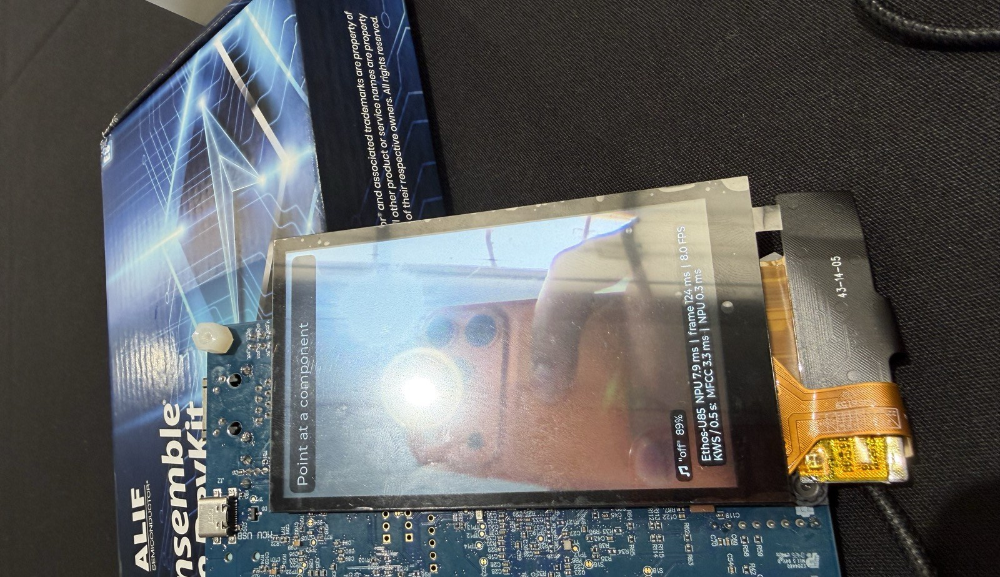

Arm + ExecuTorch Edge AI Challenge · SFSU · October 2026
DataCenter Service Management, Simplified
A handheld for the data-center floor that runs fully offline on the Alif Ensemble E8. Point the camera at a component and the Ethos-U85 NPU names it. Then your voice opens an inspection checklist and the part’s specs, troubleshooting and LED codes. No phone, no network, no cloud.

Demo
Recorded on the board, unedited apart from trimming. Everything runs on the E8: camera, NPU, microphone and LCD.
How it works
Secure data-center floors ban phones, cameras and cloud. Technicians still have to identify parts they rarely touch, with their hands busy in a rack.
01 · camera
A MobileNetV2 on the NPU names it with a confidence and an info card. When it is unsure, it shows nothing instead of guessing.
02 · say “go”
The part is held and an inspection checklist opens. “Yes” and “no” mark each item; “no” on item 1 rejects a wrong identification.
03 · say “go” again
Specs, troubleshooting, LED codes and maintenance for that exact part, retrieved on the device.
The query is the identified class plus a voice command. A 15 KB knowledge base for all 16 parts is compiled into the firmware.
Slides
Under the hood
Big models label and teach on a GPU. Two small, distilled int8 students ship in one firmware image.
| Model | Job | Params | Size | Accuracy | Runs on |
|---|---|---|---|---|---|
| YOLOv8n-seg | Auto-labeller, first crops | 3.3 M | 6.8 MB fp16 | box mAP50 0.749 | GPU, offline |
| 2× ConvNeXt-Base | Teacher | 2 × 87.6 M | 701 MB | 97.2% val | GPU, training |
| MobileNetV2 160 px | Vision, 16 parts + background | 2.25 M | 2.3 MB int8 | 91.2% photos, 73% board camera | Ethos-U85 |
| DS-CNN | Voice, 10 keywords | 79 k | 93 KB int8 | 94.7% test | Ethos-U85 |
| Vision | Voice | |
|---|---|---|
| Compute | 152.9 M MACs | 9.1 M MACs |
| NPU latency | 7.9 ms | 0.34 ms |
| Throughput | 19.4 GMAC/s | 26.8 GMAC/s |
| Layers on NPU | 100% | 100% |
| SRAM (Vela) | 755 KiB | 51 KiB |
| Weights | 2,280 KiB | 89 KiB |
| int8 = float | 98.4% | 88.3% |
Board-camera fine-tune
35% → 73%
A phone shows a clock-synced slideshow; the laptop reads each camera frame off the board and labels it from the clock. 1,330 board frames plus 1,503 replay photos, test slides never trained on. One loop: about 15 minutes.
Where this goes
Today DCSM-Simplified tells a technician which unit to pull or check. The real servicing win is one level down: which part on the board failed, like a swollen capacitor, a burnt chip or a loose connector, with its specs and the fix, still offline.
Rack level · 16 parts the model knows
Green: live in the demo. Others: trained, hidden until more board-camera data.
Board level · 21 part types, next
From a public dataset of 672 labelled board photos (CC BY 4.0).
today · rack level
Power shelf, fan, drive bay, network port and power connector, with checklists and knowledge pages.
next · board level
IC, capacitor, electrolytic capacitor, resistor, diode, inductor, transistor, crystal, connector, LED and switch.
the path
A resistor is about 2 pixels at our 160-pixel input. A small detector on high-resolution tiles, trained on 672 labelled board photos (CC BY 4.0), using the same ExecuTorch → Ethos-U85 flow.